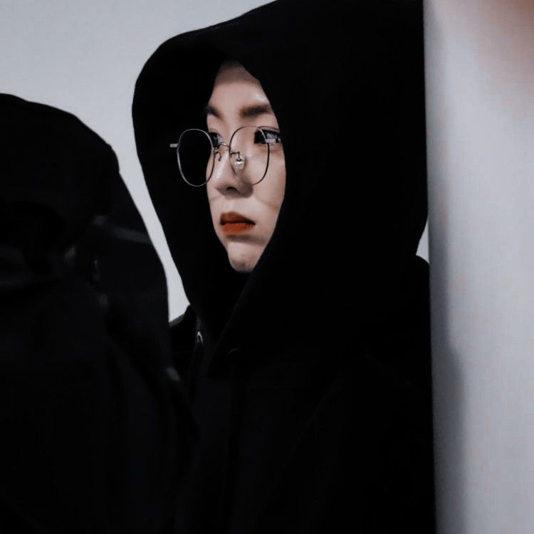

9. drop-shadow
implementasinya bisa 2 bayangan sekaligus (img & text)
jadi ga satu satu box-shadow & text-shadow
sintaks => filter: drop-shadow(5px 5px 5px magenta) grayscale(50%);

seperti filter pada umumnya di apk edit or instagram
sintaks => filter : blur(3px);
sintaks => filter : brightness(1.8);
defaultnya 100% saturate itu nimbulin warna gambar
sintaks => filter : saturate(180%);
defaultnya 0 saturate itu warna abu-abu lawan nya saturate
sintaks => filter : grayscale(70%);
defaultnya 0 saturate itu warna kekuningan
sintaks => filter : sepia(70%);
merubah roda warna [deg itu derajat]
sintaks => filter : hue-rotate(50deg) ;
nilai defaultnya 0 ini kayak efek negatif film
sintaks => filter : invert(75%) ;
nilai defaultnya 1 ini kayak efek negatif film
sintaks => filter : opacity(0.45) ;
implementasinya bisa 2 bayangan sekaligus (img & text)
jadi ga satu satu box-shadow & text-shadow
sintaks => filter: drop-shadow(5px 5px 5px magenta) grayscale(50%);